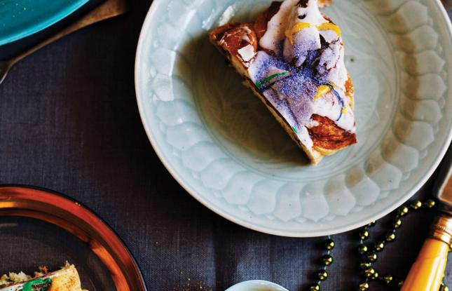
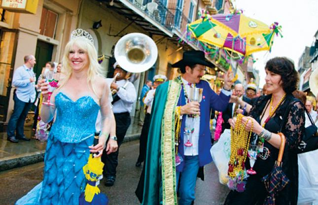
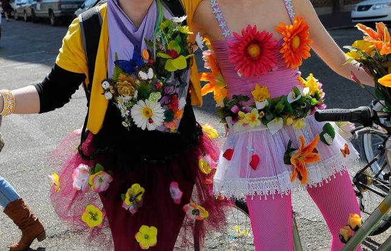

Have you tried King Cake?
King Cake. You'll want to sample this Carnival tradition for sure. Sweet dough twisted and shaped into an oblong is heavily decorated with icing and purple, green and gold sugar crystals. King cake is actually more bread than cake. Be alert: By tradition, a plastic baby is "hidden" in every king cake, and if you happen to find it in your slice, you are responsible for providing the next king cake for the party! Add this king cake recipe to your celebrations.

Experience Mardi Gras like New Orleans.
Carnival. This word is not interchangeable with "Mardi Gras." Carnival refers to the whole period of time leading up to Fat Tuesday. The Carnival season officially begins on the Feast of the Epiphany. This date is also known as Twelfth Night (12 days after Christmas). Festivities kick off on a small scale at this time, then gradually pick up steam, peaking with many parades, balls and parties on the final two weekends before Mardi Gras.
Back to top.
Grab your costumes and join the Mardi Gras party.
Mardi Gras. This is French for "Fat Tuesday," a reference to the fact that Mardi Gras always is the day before Ash Wednesday, the beginning of Lent in the Catholic faith. Because the 40 days of Lent are considered a somber period of sacrifice, Fat Tuesday is seen by many as an appropriate time for indulgence and festivity – a last chance at revelry. Nowhere in the United States is Mardi Gras celebrated as it is in Louisiana.